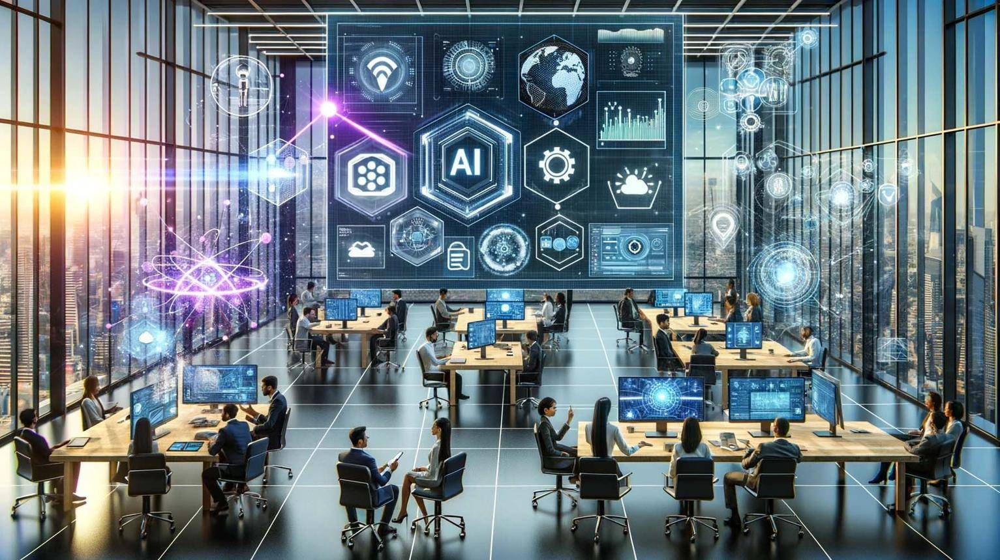
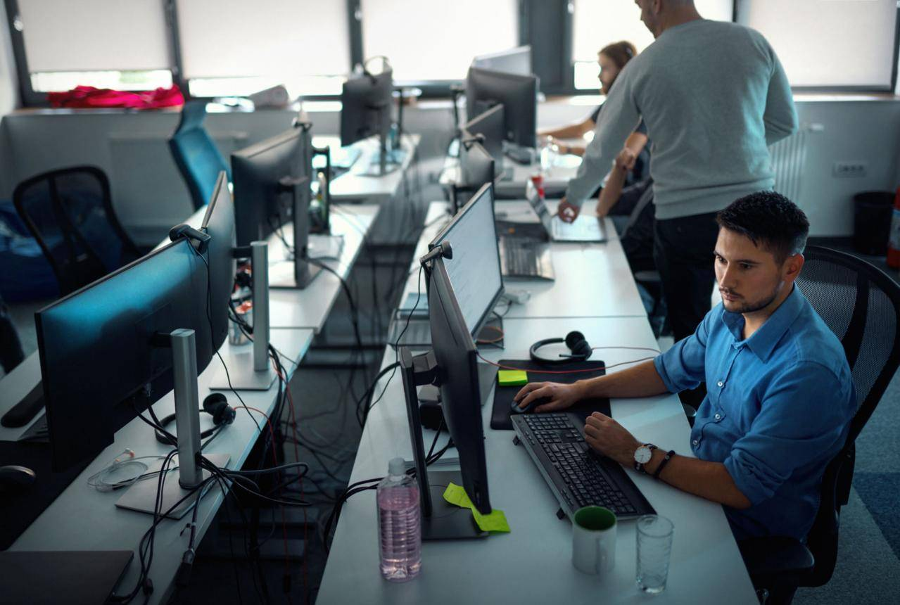

در دنیای امروز، فناوری با سرعت زیادی در حال پیشرفت است و تقریباً تمام صنایع به نرمافزار، اینترنت و سیستمهای هوشمند وابسته شدهاند. به همین دلیل، مهندسی کامپیوتر به یکی از پرتقاضاترین رشتههای دانشگاهی و شغلی تبدیل شده است. بسیاری از شرکتها برای توسعه محصولات دیجیتال، امنیت اطلاعات و تحلیل دادهها به متخصصان کامپیوتر نیاز دارند.
اگرچه رقابت در این حوزه روزبهروز بیشتر میشود، اما افرادی که مهارتهای خود را بهروز نگه میدارند، فرصتهای شغلی بسیار خوبی در داخل و خارج از کشور خواهند داشت.
مهندسی کامپیوتر رشتهای است که مفاهیم علوم کامپیوتر و مهندسی را با یکدیگر ترکیب میکند. دانشجویان این رشته با برنامهنویسی، طراحی نرمافزار، پایگاه داده، شبکه، امنیت، سیستمعامل و هوش مصنوعی آشنا میشوند.
هدف اصلی این رشته، طراحی و توسعه سیستمهای نرمافزاری و سختافزاری است که بتوانند نیازهای کاربران و سازمانها را برطرف کنند.
چند دلیل مهم وجود دارد که نشان میدهد مهندسی کامپیوتر همچنان یکی از بهترین انتخاب های شغلی است:
امروزه تقریباً همه کسبوکارها از نرمافزار و اینترنت استفاده میکنند. بانکها، فروشگاهها، بیمارستانها، دانشگاهها و حتی سازمانهای دولتی برای ارائه خدمات خود به متخصصان کامپیوتر نیاز دارند.
با گسترش اپلیکیشنهای موبایل، وبسایتها و سامانههای آنلاین، تقاضا برای توسعهدهندگان نرمافزار هر سال افزایش پیدا میکند.
هوش مصنوعی یکی از مهمترین فناوریهای آینده است و بسیاری از شرکتها در حال سرمایهگذاری روی آن هستند. این موضوع باعث ایجاد فرصتهای شغلی جدید برای مهندسان کامپیوتر شده است.
یکی از مزایای مهم این رشته، امکان همکاری با شرکتهای مختلف بدون حضور فیزیکی است. بسیاری از برنامهنویسان پروژههای خود را به صورت دورکاری انجام میدهند.
فارغ التحصیلان این رشته میتوانند در زمینه های مختلف فعالیت دکنند از جمله:
داشتن مدرک دانشگاهی به تنهایی کافی نیست برای موفقیت در بازار کار بهتر است مهارت های زیر را نیز یاد بگیرید:
اگر دانشجوی مهندسی کامپیوتر هستید بهتر است از دوران دانشگاه روی این موارد تمرکز کنید:

مهندسی کامپیوتر یکی از آیندهدارترین رشتههای دانشگاهی است و با پیشرفت فناوری، نیاز به متخصصان این حوزه همچنان افزایش خواهد یافت. موفقیت در این رشته تنها به مدرک دانشگاهی وابسته نیست، بلکه یادگیری مستمر، انجام پروژههای عملی و بهروز نگه داشتن مهارتها نقش بسیار مهمی در ساختن آینده شغلی موفق دارند. دانشجویانی که از دوران تحصیل روی مهارتهای فنی و تجربه عملی سرمایهگذاری کنند، شانس بیشتری برای ورود به بازار کار و پیشرفت حرفهای خواهند داشت.